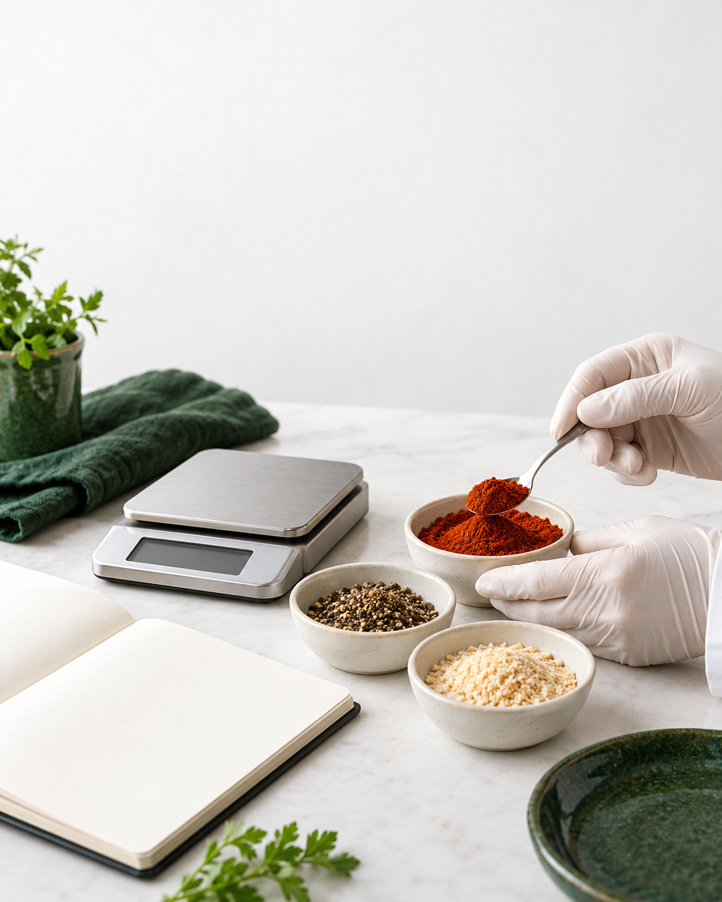
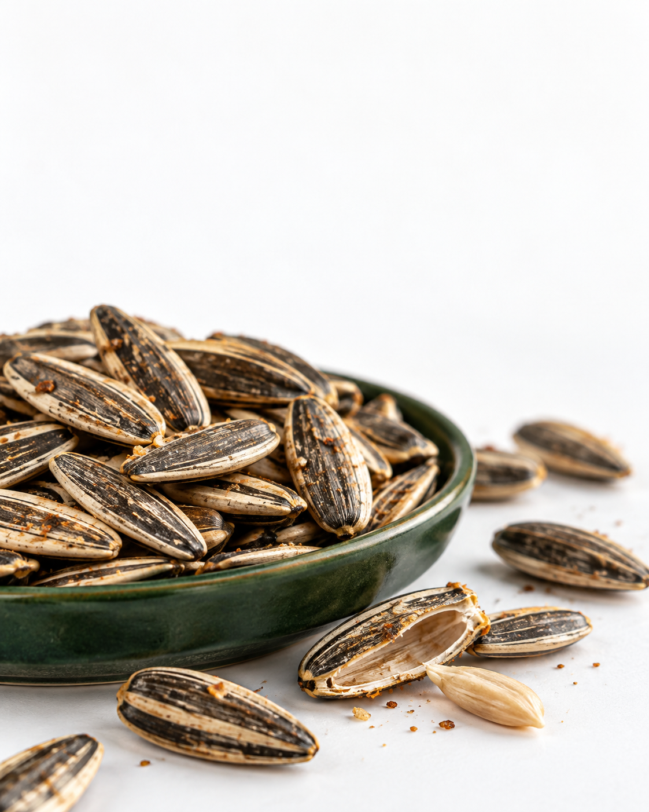
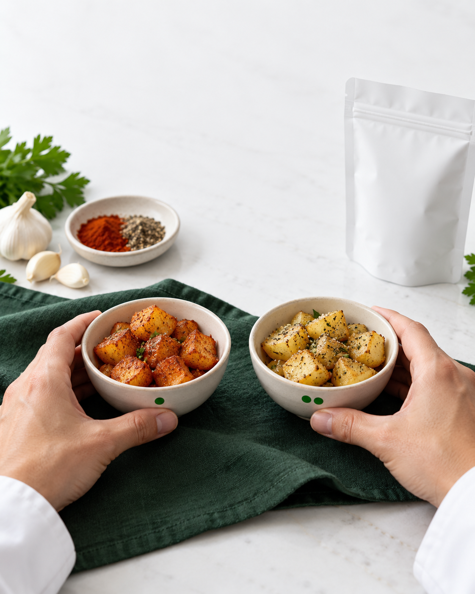

Actual benchmark captures from your research, interpreted separately for ROZA LAB, HUBB and the proposed spices line. See the visual, understand the approach and choose what to make.
MAIN SOURCE / YOUR 11-PAGE SOCIAL POST EVIDENCE PDF
The real post, and the useful idea inside it.
Captured evidence · not a ranking
A screenshot proves what was visible, not what worked commercially.
Public counts do not reveal reach, paid support, qualified enquiries, product demand or sales. These are selected captured frames; complete reel pacing and every carousel frame were not audited. We do not label a post “trending” without time-series and metric evidence.
ONE WORKING GROUP / THREE DIFFERENT JOBS
Keep the brand promise and the audience distinct.
ORIGINAL CREATIVE / GROUNDED IN THE BENCHMARKS
Turn the lesson into something your team can make.
These are original production directions. Real brand work still needs genuine footage, approved product facts and the release checks shown here.
Three shared production batchesWhat success means for each brand
DATED OFFICIAL GUIDANCE / VERIFIED 3 OCTOBER 2026
What the platforms actually say.
Use platform guidance to form a test. A published signal is not a disclosed numerical ranking formula or a guarantee of distribution.
RESEARCH → LESSON → ORIGINAL ROZA STORY
Choose a post. See how to make it.
16 briefs · 3 platforms
Complete platform copy, visual frames and filming instructions sit beside their research references. Everything is a draft for review; no content is scheduled or published.
Channel plan, audience priorities and profile drafts
Evidence base: 14 Instagram records and 18 LinkedIn records, including one article. The original 32-record audit did not include Facebook. Later Facebook captures are labelled separately in the benchmark gallery; the October drafts remain proposed platform adaptations.
01 / PUBLISHING PLAN
16 proposed slots. One manageable month.
5–31 October
Proposed plan composition. Remixes reuse ROZA LAB’s own approved assets.
Tap a post for its shot idea and release check. Dates are proposals; no posts are scheduled.
Week 1 October 05–11
05MonWhy ROZA LAB?Reel · P01+
Agree the next useful question.
Asset: Spokesperson + real workbench
Release check: GM verifies title and response owner
07WedFrom idea to trialCarousel · P02+
A path with room to pause and retest.
Asset: Question → trial → observation → next decision
Release check: GM approves service scope
09FriThe next crackReel · P03+
Meet the HUBB pilot brief.
Asset: Actual seed, shell and kernel
Release check: R&D checks product wording
11SunPeople around the tablePhoto · P10+
The real team and the work each person does.
Asset: Consented team portrait
Release check: Names, roles and photo permission
Week 2 October 12–18
12MonWhat would we check?Reel · P04+
Crackability trial demonstration.
Asset: Blank observation sheet + actual sample
Release check: Label demonstration; no historic result claim
14WedWhat do you read first?Reel · P05+
Two packaging mock-ups; one clarity question.
Asset: Equal-size A / B pack mock-ups
Release check: Same approved information on both
16FriWhere is it getting stuck?Carousel · P08+
Recipe, pack, explanation or test?
Asset: Four concrete starting points
Release check: GM approves proposed offer
18SunOne small experiencePhoto · P11+
An in-shell seed has several moments.
Asset: Actual seed / shell / kernel macro
Release check: No improved or generated product texture
Week 3 October 19–25
19MonTwo perspectivesReel · P06+
Chef kitchen and R&D discuss one sample.
Asset: Real conversation at the same table
Release check: Both speakers approve actual words
21WedBefore distributionReel · P07+
Product and channel fit need their own check.
Asset: Spokesperson + decision checklist
Release check: Verify capabilities; no listing promise
23FriBring four linesCarousel · P09+
Product, customer, stage, question.
Asset: Non-confidential enquiry checklist
Release check: Response owner and channel ready
25SunWhat happens after a pilot?Photo · P12+
Prepare a bounded HUBB feedback round.
Asset: Real sample + proposed feedback prompts
Release check: Use non-collection caption until operations ready
Week 4 October 26–31
26MonOne useful questionRemix · R01+
A recut of approved process footage.
Asset: Reuse P01 / P03 / P06
Release check: Reuse only consented, approved assets
28WedPack clarity, revisitedRemix · R02+
One still; one specific reading question.
Asset: Reuse P05 mock-up photo
Release check: Do not invent an A/B winner
30FriA practical FAQRemix · R03+
What to bring to a first conversation.
Asset: Reuse P02 / P09 layout
Release check: Check the current enquiry route
31SatBack to the next crackRemix · R04+
Close the month with the pilot question.
Asset: Reuse P03 / P11 close-up
Release check: No consumer validation claim
Batch real footage in two shoots. Choose quality and response capacity before adding channels. Review actual results on 1–2 November.
02 / CREATIVE STARTING POINTS
Six layouts, ready for real evidence.
The original logo is used unchanged throughout. Three AI concept images show the photographic direction; they do not depict ROZA LAB, its team or the actual HUBB product. Replace them with genuine footage before documentary posts.
Reel cover
What is the next question for your food idea?

AI concept image · not our actual lab
A starting point. A useful test. A clearer next decision.
DRAFT LAYOUT · 01
01 / Question-led introduction
Edit or copy caption
Edits stay in this page until you reload. Copy to keep them.
Release gate: confirm the enquiry channel and response owner.
Edits stay in this page until you reload. Copy to keep them.
Release gate: source links and proposed trial reviewed by R&D.
Reel cover
What makes you crack the next one?

AI concept image · not the HUBB product
HUBB / first pilot / in-shell sunflower seeds
DRAFT LAYOUT · 03
03 / HUBB pilot story
Edit or copy caption
Edits stay in this page until you reload. Copy to keep them.
Release gate: replace the shot diagram with genuine HUBB footage before posting.
Trial-story template
What changed? What happened? What next?
Change one thingObserve record itDecide test again?
One variable. A recorded observation. An honest next decision.
DRAFT LAYOUT · 04
04 / A visible retest
Edit or copy caption
Edits stay in this page until you reload. Copy to keep them.
Release gate: only insert results supported by actual trial records.
Carousel cover
Same product. Two ways to explain it.
AProduct first
BQuestion first
A / B — What do you read first?
DRAFT LAYOUT · 05
05 / Packaging clarity
Edit or copy caption
Edits stay in this page until you reload. Copy to keep them.
Release gate: use real, equally presented mock-ups with approved pack information.
Hiring draft
Help turn food questions into clear stories.

AI concept image · not an actual trial
Role concept / not open yet
DRAFT LAYOUT · 06
06 / Hiring direction
Edit or copy caption
Edits stay in this page until you reload. Copy to keep them.
Release gate: approve role, compensation, work arrangement and application route before publication.
What stays honest
Don’t manufacture trial failures, sensory results, testimonials or a larger facility. A demonstration is labelled a demonstration; a pack concept is labelled a mock-up.
THE CASE STUDY TO EARN
HUBB: tell the story in evidence-sized steps.
The owner says product development is complete. No underlying trial results or consumer validation were supplied. Publish the brief now; release later chapters only when their evidence exists.
FROM BRIEF TO CAMERA TO REVIEW
A production plan the small team can use.
The evidence and permissions checklistVisual production standards and shoot coverageSeven campaign release gates
SMALL TESTS, USEFUL DECISIONS
Measure what happened, not what the layout suggests.
THE CREATIVE LIBRARY
Keep the references. Shoot the reality.
The six current layouts above use the exact final ROZA LAB logo. These earlier AI boards are retained only to explain composition and shot sequencing. They contain the superseded “ROZA LABS” wordmark and unverified visual details, so they are not approved final posts.
Early 50-second shot reference · AI illustration · use the current approved script and actual HUBB product. Open full size.
Competitor evidence stays attributed.
Open the linked original posts from each campaign brief or the research register. Their photos, videos, music, layouts and screenshots are research evidence, not ROZA LAB assets cleared for commercial reuse. Recreate the lesson through original work.
03 / ONE ORIGINAL REEL
HUBB: “The next crack”
A proposed 35-second shot sequence. Record the actual pilot and natural sound; this is a filming plan, not completed footage.
01
The real crack
Macro shot of a real seed being opened. Keep the sound. Hook: “What makes you crack the next one?”
02
Name the question
Show shell and kernel. On screen: “Crackability / roast / flavour.” Describe the brief, not a proven result.
03
The observation sheet
Hands write the criteria on a blank sheet. Label present filming “Demonstration” if it isn’t original trial footage.
04
A real working conversation
R&D explains one genuine uncertainty. Use their actual words and consented footage.
05
Pilot, then feedback
Show the actual pilot pack or sample. Say: “The next step is a carefully prepared feedback round.”
06
One useful question
Ask: “Which part would you notice first?” No sample-order promise until fulfilment is approved.
Shoot vertical 9:16. Keep captions readable away from platform controls. Use licensed music or real recorded sound. No fictional chefs or simulated historical experiments.
04 / DISCOVERY WORKBENCH
An interesting association needs a trial.
Start with a product question, then follow evidence into a test. This original planning map contains no computed pairing scores or live database queries.
1 · SOURCEEvidence to find
2 · HYPOTHESISProposed
3 · TRIALNot yet run
4 · DECISIONAwait observations
Four different kinds of evidence
Culinary use suggests a lead. Aroma chemistry suggests a mechanism. A bench trial gives observations in that formulation. A controlled sensory study can assess response under its stated conditions. None automatically establishes safety, shelf life, water solubility or commercial demand.
Research inspiration and reuse boundary
Inspired by exploring Epicure as a spice-research starting point. ROZA LAB’s map is an original interface. No third-party code, API, scoring model or branding is embedded.
Captured public model examples · 3 October 2026: sunflower seed + cumin returned cosine affinity 0.085, labelled “Moderate”; tomato + basil returned 0.271, labelled “Very high (≥p90)”. These are learned statistical associations, not percentages, sensory-test results or compatibility probabilities. This site does not run the model or send recipe inputs.
Observed in the public demo. The 2026 Epicure preprint describes its research method; it is not peer-reviewed validation of the current service or a ROZA formulation.
The public Epicure MCP repository is a research reference. Code licensing, service terms and rights to underlying data are separate questions. Any later integration needs its own review. The repository MIT license requires its notices in reused software; it does not establish unrestricted rights to the site’s design, photographs or all upstream data. Public demo use follows its service terms.
Role concepts for discussion. Team roles already known: Roshan / GM, Sangeetha / R&D, Nikhil / packaging and Aliya / calligraphy. Confirm every person’s public title and permission.
Proposed role
Content & video collaborator
Turn real work into clear, accurate short films and posts.
Plan and capture genuine lab/kitchen footage
Edit captions, sound and channel versions
Route technical claims for review
Practical work sample: explain one non-confidential trial in a short storyboard.
Proposed role
Chef / product-development collaborator
Connect the eating experience with a repeatable kitchen trial.
Help define sensory questions
Keep recipe versions and observations clear
Work alongside R&D on next trials
Practical work sample: a trial plan with one variable and a clear observation sheet.
Proposed responsibility
Pilot & fulfilment owner
Make a small feedback round manageable from request to follow-up.
Check stock and eligible locations
Confirm real delivery quotes
Track consented feedback separately from orders
May be an assigned responsibility rather than a new hire.
Before any hiring announcement
Confirm exact role, reporting line, employment or contract type, location and onsite needs, pay range, working hours, start date, portfolio requirements, application route and selection owner. No vacancy is open through this demo.
Two hiring campaign directions
ROLE CONCEPT · NOT OPEN YET
Help shape the next bite.
Food R&D · title to approve
Test recipes. Record results. Learn from feedback.
Additional headcount only if approved; no change to existing roles is assumed.
ROLE CONCEPT · NOT OPEN YET
Make the process worth watching.
Content & Video · title to approve
Turn real food experiments into clear, original stories.
Equivalent portfolio samples welcome in the proposed process; do not assume unpaid new trial work.
Approve location, work pattern, contract, compensation, essential skills, application recipient, privacy/retention terms and selection steps before publishing. Applications are not open.
06 / PILOT STORE CONCEPT
Request → quote → learn.
Three screens for a bounded HUBB sample pilot. The proposed product sample is free; the actual delivery charge and all terms must be confirmed before someone decides.
Interactive prototype only. No personal details, addresses, payments, orders or feedback are submitted or saved.
First launch decision
Use a staffed interest route before checkout. Once territory, food information, stock, delivery, terms and support are ready, select an ecommerce platform for the approved pilot.
What the test can tell you
Product feedback can guide the next version. Free samples and delivery payments do not establish full-price demand, repeat purchase or Saudi distribution readiness.
How to open the actual pilot store
Approve the one-product pilot
Choose the batch, capped quantity, participant group and area. Confirm food information, allergens, packaging, shelf life, responsible safety review and support.
Choose a platform and merchant setup
A hosted platform is the practical starting point if no WordPress site or technical maintainer exists. WooCommerce is worth considering with reliable WordPress support. No account or plan has been purchased.
Shopify: verify plan, third-party gateway fees, apps and courier costs. India is not on the current Shopify Payments country list; confirm a compatible provider.
WooCommerce: core software is free; hosting, maintenance, security, extensions and processing still cost money. A named maintainer is needed.
Build accurate product and delivery pages
Show all approved food/pack facts, eligible postcodes, real courier quote, complete total, privacy notice, support and cancellation/refund terms. Do not collect medical histories or card details in a custom form.
Test before opening participation
Use provider test mode. Check in-area/out-of-area, stock exhaustion, success/failure/pending payment, duplicate requests, receipts, shipping notifications and feedback links. Follow the Shopify launch checks or WooCommerce setup checklist.
Release a controlled batch and review
Reconcile delivered, failed and damaged samples; read feedback and safety concerns; approve changes before another batch. Keep delivery-only payments separate from product sales.
Confirm applicable current food rules with the responsible specialist. India references: FSSAI licensing FAQ and labelling amendment index. A free-sample label does not remove food-safety obligations.
07 / RELEASE CHECKS
Earn the next step.
A working checklist for discussion. Checkmarks only last until this page reloads; they do not approve or launch anything.
08 / EVIDENCE & LIMITS
Use the research as a starting point.
Actual research-register composition, observed 3 October 2026.
A purposeful small sample, not a performance ranking. Three LinkedIn records were search snippets only; the other records used opened public or cached pages. Reels were not all watched end-to-end; carousels may be first-card-only. No Roza trial outcomes or sales results are implied.
ROZA LAB is a collaborative food-development practice in Kozhikode. HUBB is its first pilot; the owner says development is complete and pilot feedback is next.
Proposed here
The content calendar, creative layouts, filming sequence, trial paths, role concepts and three-screen sample-pilot flow.
Not verified
HUBB trial outcomes, sensory validation, safety or shelf life, approved ecommerce territory/terms, vacancy details, demand, or confirmed Saudi listings.